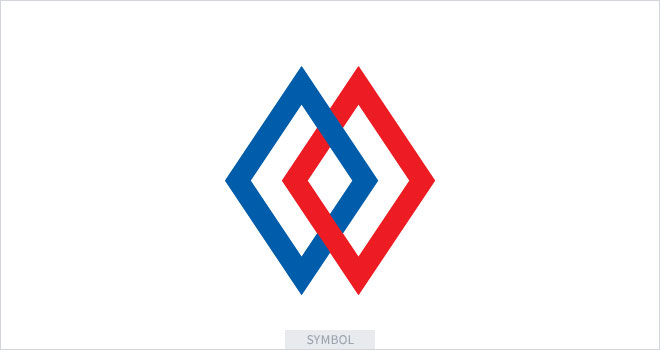

※국외소재문화재재단 CI는 안휘준 초대 이사장님의 창안으로 만들어졌습니다.
다이아몬드 두개가 하나는 청색(靑色), 다른 하나는 홍색(紅色)으로 표현된 것은
태극기의 청색 및 홍색과 동일한 의미를 지니고 있으며 천지(天地), 건곤(乾坤), 음양(陰陽)을
상징합니다. 다이아몬드 모양 심볼은 조선왕조시대의 목재 감실(龕室)의 문양을 참조하여
만들어졌습니다. 조상의 얼과 혼을 담고 있으며 전통문화의 계승을 의미합니다.
한글로고타입은 심볼 모양인 다이아몬드의 각진 모습과 잘 어울리도록
글자를 재편집 한 것입니다.